Talk · 2026 · 33 slides
Fake People, Real Consequences.
How bots, fake crowds and fake personas are used to manipulate people, and what the evidence says about whether it works.
Adam Welbourne · SOC Analyst
-
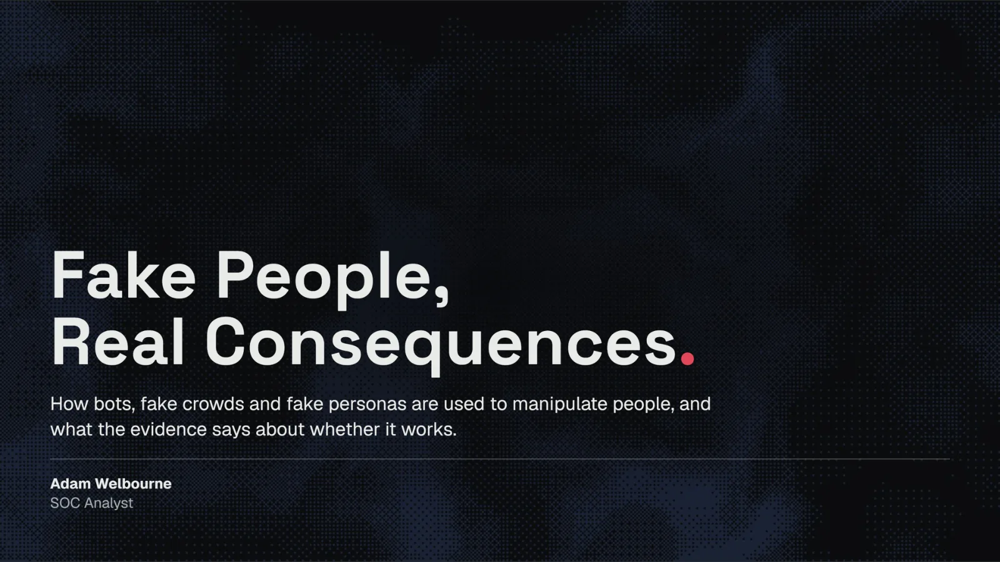
Slide 1 text
Fake People, Real Consequences. How bots, fake crowds and fake personas are used to manipulate people, and what the evidence says about whether it works. Adam Welbourne SOC Analyst
-
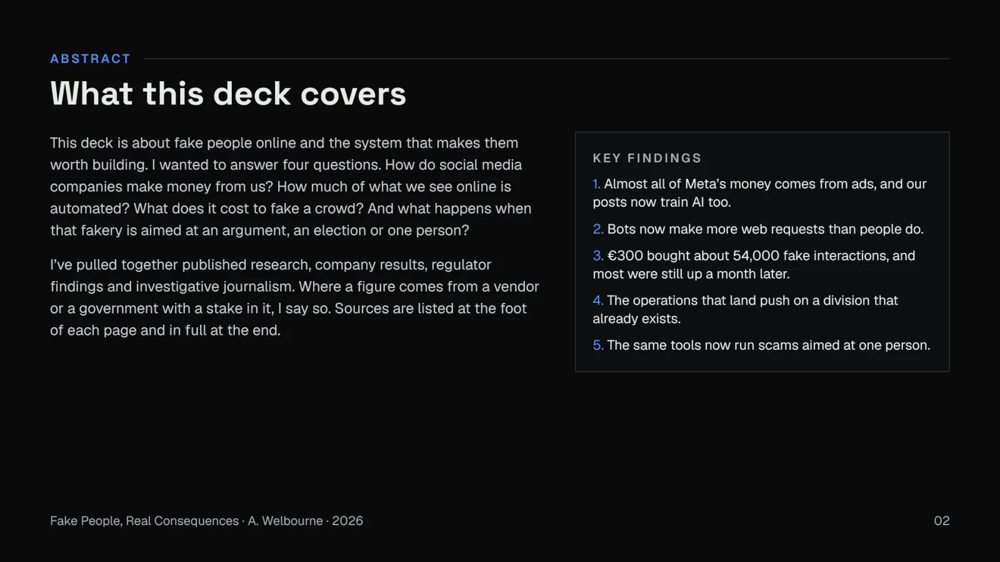
Slide 2 text
Abstract What this deck covers This deck is about fake people online and the system that makes them worth building. I wanted to answer four questions. How do social media companies make money from us? How much of what we see online is automated? What does it cost to fake a crowd? And what happens when that fakery is aimed at an argument, an election or one person? I’ve pulled together published research, company results, regulator findings and investigative journalism. Where a figure comes from a vendor or a government with a stake in it, I say so. Sources are listed at the foot of each page and in full at the end. Key findings 1. Almost all of Meta’s money comes from ads, and our posts now train AI too. 2. Bots now make more web requests than people do. 3. €300 bought about 54,000 fake interactions, and most were still up a month later. 4. The operations that land push on a division that already exists. 5. The same tools now run scams aimed at one person.
-
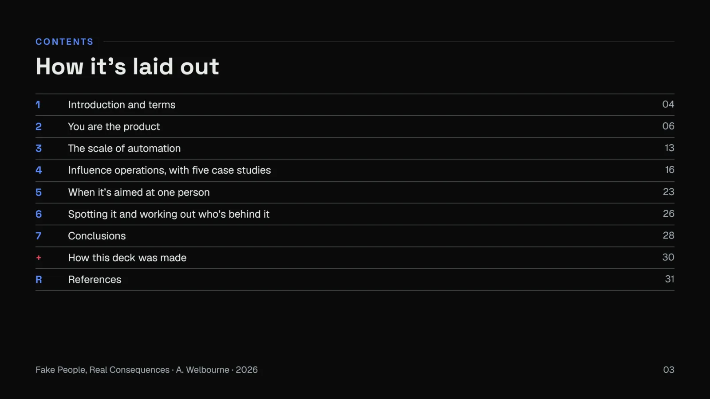
Slide 3 text
Contents How it’s laid out 1 Introduction and terms 04 2 You are the product 06 3 The scale of automation 13 4 Influence operations, with five case studies 16 5 When it’s aimed at one person 23 6 Spotting it and working out who’s behind it 26 7 Conclusions 28 + How this deck was made 30 R References 31
-
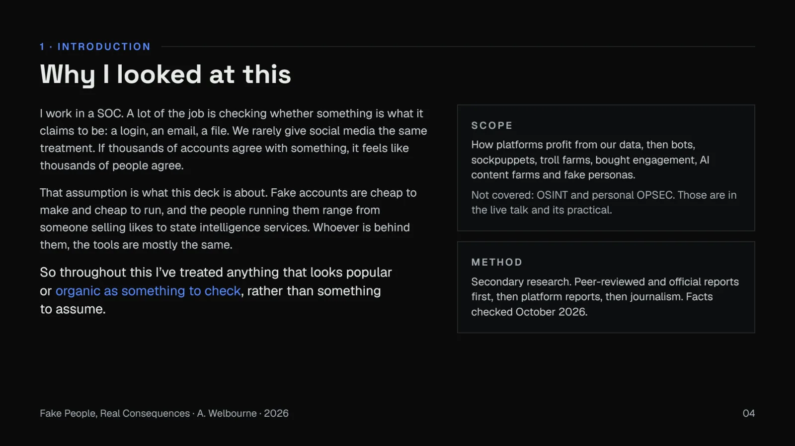
Slide 4 text
1 · Introduction Why I looked at this I work in a SOC. A lot of the job is checking whether something is what it claims to be: a login, an email, a file. We rarely give social media the same treatment. If thousands of accounts agree with something, it feels like thousands of people agree. That assumption is what this deck is about. Fake accounts are cheap to make and cheap to run, and the people running them range from someone selling likes to state intelligence services. Whoever is behind them, the tools are mostly the same. So throughout this I’ve treated anything that looks popular or organic as something to check, rather than something to assume. Scope How platforms profit from our data, then bots, sockpuppets, troll farms, bought engagement, AI content farms and fake personas. Not covered: OSINT and personal OPSEC. Those are in the live talk and its practical. Method Secondary research. Peer-reviewed and official reports first, then platform reports, then journalism. Facts checked October 2026.
-
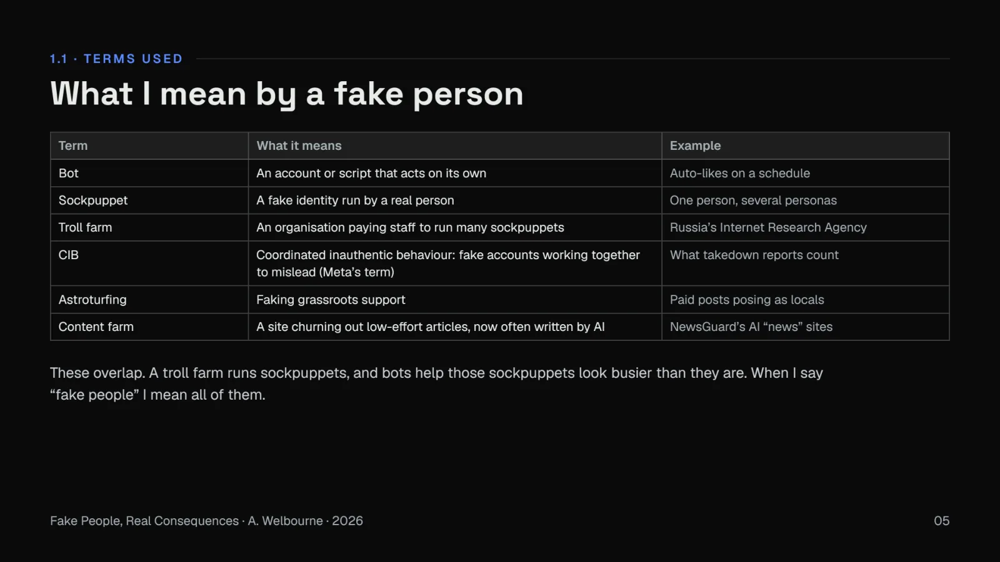
Slide 5 text
1.1 · Terms used What I mean by a fake person Term What it means Example Bot An account or script that acts on its own Auto-likes on a schedule Sockpuppet A fake identity run by a real person One person, several personas Troll farm An organisation paying staff to run many sockpuppets Russia’s Internet Research Agency CIB Coordinated inauthentic behaviour: fake accounts working together to mislead (Meta’s term) What takedown reports count Astroturfing Faking grassroots support Paid posts posing as locals Content farm A site churning out low-effort articles, now often written by AI NewsGuard’s AI “news” sites These overlap. A troll farm runs sockpuppets, and bots help those sockpuppets look busier than they are. When I say “fake people” I mean all of them.
-
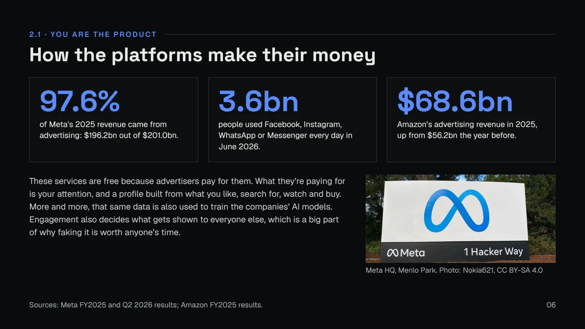
Slide 6 text
2.1 · You are the product How the platforms make their money 97.6% of Meta’s 2025 revenue came from advertising: $196.2bn out of $201.0bn. 3.6bn people used Facebook, Instagram, WhatsApp or Messenger every day in June 2026. $68.6bn Amazon’s advertising revenue in 2025, up from $56.2bn the year before. These services are free because advertisers pay for them. What they’re paying for is your attention, and a profile built from what you like, search for, watch and buy. More and more, that same data is also used to train the companies’ AI models. Engagement also decides what gets shown to everyone else, which is a big part of why faking it is worth anyone’s time. Meta HQ, Menlo Park. Photo: Nokia621, CC BY-SA 4.0 Sources: Meta FY2025 and Q2 2026 results; Amazon FY2025 results. 06
-
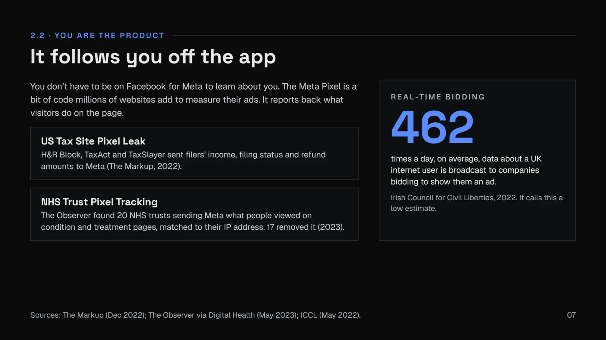
Slide 7 text
2.2 · You are the product It follows you off the app You don’t have to be on Facebook for Meta to learn about you. The Meta Pixel is a bit of code millions of websites add to measure their ads. It reports back what visitors do on the page. US Tax Site Pixel Leak H&R Block, TaxAct and TaxSlayer sent filers’ income, filing status and refund amounts to Meta (The Markup, 2022). NHS Trust Pixel Tracking The Observer found 20 NHS trusts sending Meta what people viewed on condition and treatment pages, matched to their IP address. 17 removed it (2023). Real-time bidding 462 times a day, on average, data about a UK internet user is broadcast to companies bidding to show them an ad. Irish Council for Civil Liberties, 2022. It calls this a low estimate. Sources: The Markup (Dec 2022); The Observer via Digital Health (May 2023); ICCL (May 2022). 07
-
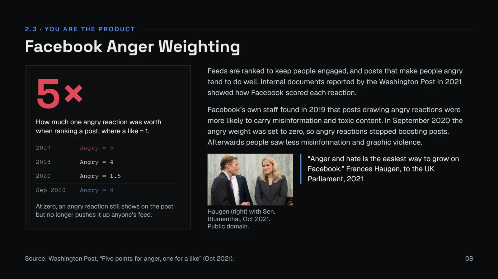
Slide 8 text
2.3 · You are the product Facebook Anger Weighting 5× How much one angry reaction was worth when ranking a post, where a like = 1. 2017 Angry = 5 2018 Angry = 4 2020 Angry = 1.5 Sep 2020 Angry = 0 At zero, an angry reaction still shows on the post but no longer pushes it up anyone’s feed. Feeds are ranked to keep people engaged, and posts that make people angry tend to do well. Internal documents reported by the Washington Post in 2021 showed how Facebook scored each reaction. Facebook’s own staff found in 2019 that posts drawing angry reactions were more likely to carry misinformation and toxic content. In September 2020 the angry weight was set to zero, so angry reactions stopped boosting posts. Afterwards people saw less misinformation and graphic violence. Haugen (right) with Sen. Blumenthal, Oct 2021. Public domain. “Anger and hate is the easiest way to grow on Facebook.” Frances Haugen, to the UK Parliament, 2021 Source: Washington Post, “Five points for anger, one for a like” (Oct 2021). 08
-
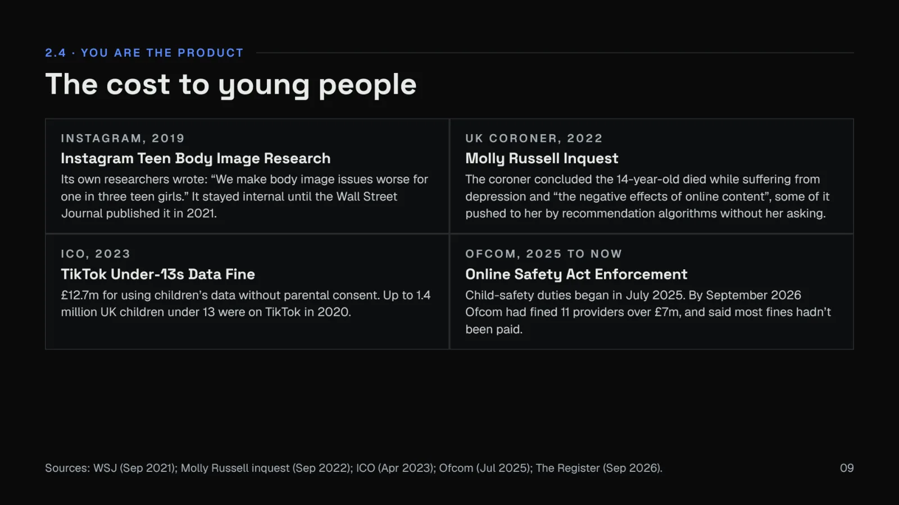
Slide 9 text
2.4 · You are the product The cost to young people Instagram, 2019 Instagram Teen Body Image Research Its own researchers wrote: “We make body image issues worse for one in three teen girls.” It stayed internal until the Wall Street Journal published it in 2021. UK coroner, 2022 Molly Russell Inquest The coroner concluded the 14-year-old died while suffering from depression and “the negative effects of online content”, some of it pushed to her by recommendation algorithms without her asking. ICO, 2023 TikTok Under-13s Data Fine £12.7m for using children’s data without parental consent. Up to 1.4 million UK children under 13 were on TikTok in 2020. Ofcom, 2025 to now Online Safety Act Enforcement Child-safety duties began in July 2025. By September 2026 Ofcom had fined 11 providers over £7m, and said most fines hadn’t been paid. Sources: WSJ (Sep 2021); Molly Russell inquest (Sep 2022); ICO (Apr 2023); Ofcom (Jul 2025); The Register (Sep 2026). 09
-
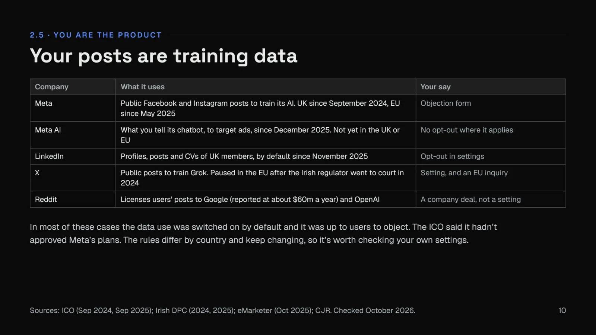
Slide 10 text
2.5 · You are the product Your posts are training data Company What it uses Your say Meta Public Facebook and Instagram posts to train its AI. UK since September 2024, EU since May 2025 Objection form Meta AI What you tell its chatbot, to target ads, since December 2025. Not yet in the UK or EU No opt-out where it applies LinkedIn Profiles, posts and CVs of UK members, by default since November 2025 Opt-out in settings X Public posts to train Grok. Paused in the EU after the Irish regulator went to court in 2024 Setting, and an EU inquiry Reddit Licenses users’ posts to Google (reported at about $60m a year) and OpenAI A company deal, not a setting In most of these cases the data use was switched on by default and it was up to users to object. The ICO said it hadn’t approved Meta’s plans. The rules differ by country and keep changing, so it’s worth checking your own settings. Sources: ICO (Sep 2024, Sep 2025); Irish DPC (2024, 2025); eMarketer (Oct 2025); CJR. Checked October 2026. 10
-
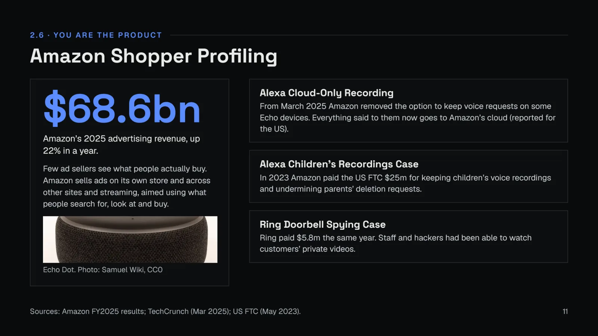
Slide 11 text
2.6 · You are the product Amazon Shopper Profiling $68.6bn Amazon’s 2025 advertising revenue, up 22% in a year. Few ad sellers see what people actually buy. Amazon sells ads on its own store and across other sites and streaming, aimed using what people search for, look at and buy. Echo Dot. Photo: Samuel Wiki, CC0 Alexa Cloud-Only Recording From March 2025 Amazon removed the option to keep voice requests on some Echo devices. Everything said to them now goes to Amazon’s cloud (reported for the US). Alexa Children’s Recordings Case In 2023 Amazon paid the US FTC $25m for keeping children’s voice recordings and undermining parents’ deletion requests. Ring Doorbell Spying Case Ring paid $5.8m the same year. Staff and hackers had been able to watch customers’ private videos. Sources: Amazon FY2025 results; TechCrunch (Mar 2025); US FTC (May 2023). 11
-
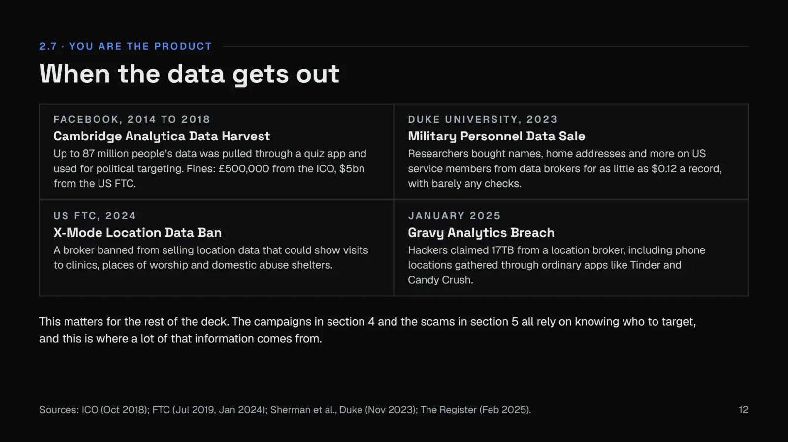
Slide 12 text
2.7 · You are the product When the data gets out Facebook, 2014 to 2018 Cambridge Analytica Data Harvest Up to 87 million people’s data was pulled through a quiz app and used for political targeting. Fines: £500,000 from the ICO, $5bn from the US FTC. Duke University, 2023 Military Personnel Data Sale Researchers bought names, home addresses and more on US service members from data brokers for as little as $0.12 a record, with barely any checks. US FTC, 2024 X-Mode Location Data Ban A broker banned from selling location data that could show visits to clinics, places of worship and domestic abuse shelters. January 2025 Gravy Analytics Breach Hackers claimed 17TB from a location broker, including phone locations gathered through ordinary apps like Tinder and Candy Crush. This matters for the rest of the deck. The campaigns in section 4 and the scams in section 5 all rely on knowing who to target, and this is where a lot of that information comes from. Sources: ICO (Oct 2018); FTC (Jul 2019, Jan 2024); Sherman et al., Duke (Nov 2023); The Register (Feb 2025). 12
-
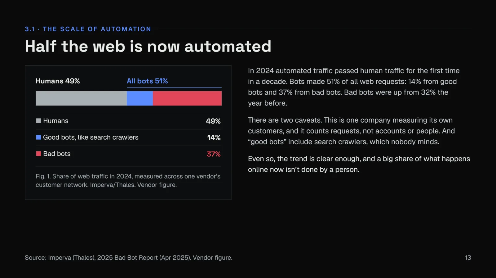
Slide 13 text
3.1 · The scale of automation Half the web is now automated Humans 49% All bots 51% ■ Humans 49% ■ Good bots, like search crawlers 14% ■ Bad bots 37% Fig. 1. Share of web traffic in 2024, measured across one vendor’s customer network. Imperva/Thales. Vendor figure. In 2024 automated traffic passed human traffic for the first time in a decade. Bots made 51% of all web requests: 14% from good bots and 37% from bad bots. Bad bots were up from 32% the year before. There are two caveats. This is one company measuring its own customers, and it counts requests, not accounts or people. And “good bots” include search crawlers, which nobody minds. Even so, the trend is clear enough, and a big share of what happens online now isn’t done by a person. Source: Imperva (Thales), 2025 Bad Bot Report (Apr 2025). Vendor figure. 13
-
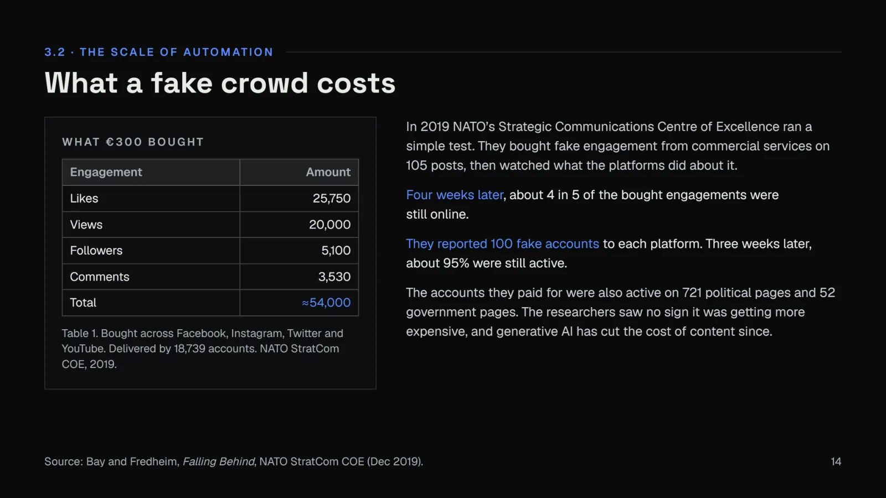
Slide 14 text
3.2 · The scale of automation What a fake crowd costs What €300 bought Engagement Amount Likes 25,750 Views 20,000 Followers 5,100 Comments 3,530 Total ≈54,000 Table 1. Bought across Facebook, Instagram, Twitter and YouTube. Delivered by 18,739 accounts. NATO StratCom COE, 2019. In 2019 NATO’s Strategic Communications Centre of Excellence ran a simple test. They bought fake engagement from commercial services on 105 posts, then watched what the platforms did about it. Four weeks later, about 4 in 5 of the bought engagements were still online. They reported 100 fake accounts to each platform. Three weeks later, about 95% were still active. The accounts they paid for were also active on 721 political pages and 52 government pages. The researchers saw no sign it was getting more expensive, and generative AI has cut the cost of content since. Source: Bay and Fredheim, Falling Behind, NATO StratCom COE (Dec 2019). 14
-
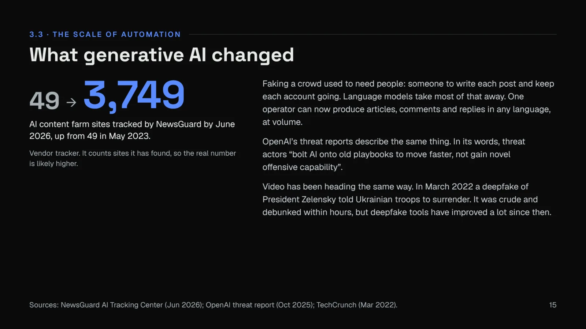
Slide 15 text
3.3 · The scale of automation What generative AI changed 49 →3,749 AI content farm sites tracked by NewsGuard by June 2026, up from 49 in May 2023. Vendor tracker. It counts sites it has found, so the real number is likely higher. Faking a crowd used to need people: someone to write each post and keep each account going. Language models take most of that away. One operator can now produce articles, comments and replies in any language, at volume. OpenAI’s threat reports describe the same thing. In its words, threat actors “bolt AI onto old playbooks to move faster, not gain novel offensive capability”. Video has been heading the same way. In March 2022 a deepfake of President Zelensky told Ukrainian troops to surrender. It was crude and debunked within hours, but deepfake tools have improved a lot since then. Sources: NewsGuard AI Tracking Center (Jun 2026); OpenAI threat report (Oct 2025); TechCrunch (Mar 2022). 15
-
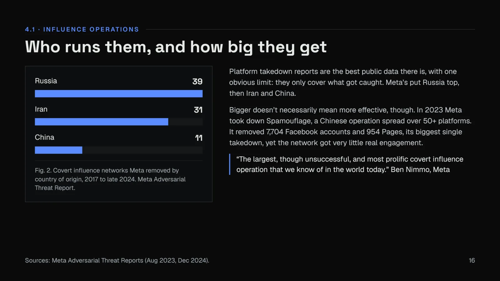
Slide 16 text
4.1 · Influence operations Who runs them, and how big they get Russia 39 Iran 31 China 11 Fig. 2. Covert influence networks Meta removed by country of origin, 2017 to late 2024. Meta Adversarial Threat Report. Platform takedown reports are the best public data there is, with one obvious limit: they only cover what got caught. Meta’s put Russia top, then Iran and China. Bigger doesn’t necessarily mean more effective, though. In 2023 Meta took down Spamouflage, a Chinese operation spread over 50+ platforms. It removed 7,704 Facebook accounts and 954 Pages, its biggest single takedown, yet the network got very little real engagement. “The largest, though unsuccessful, and most prolific covert influence operation that we know of in the world today.” Ben Nimmo, Meta Sources: Meta Adversarial Threat Reports (Aug 2023, Dec 2024). 16
-
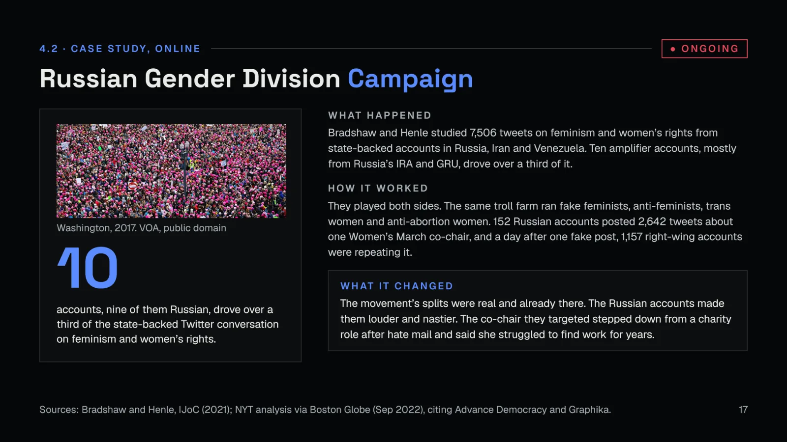
Slide 17 text
4.2 · Case study, online ● Ongoing Russian Gender Division Campaign Washington, 2017. VOA, public domain 10 accounts, nine of them Russian, drove over a third of the state-backed Twitter conversation on feminism and women’s rights. What happened Bradshaw and Henle studied 7,506 tweets on feminism and women’s rights from state-backed accounts in Russia, Iran and Venezuela. Ten amplifier accounts, mostly from Russia’s IRA and GRU, drove over a third of it. How it worked They played both sides. The same troll farm ran fake feminists, anti-feminists, trans women and anti-abortion women. 152 Russian accounts posted 2,642 tweets about one Women’s March co-chair, and a day after one fake post, 1,157 right-wing accounts were repeating it. What it changed The movement’s splits were real and already there. The Russian accounts made them louder and nastier. The co-chair they targeted stepped down from a charity role after hate mail and said she struggled to find work for years. Sources: Bradshaw and Henle, IJoC (2021); NYT analysis via Boston Globe (Sep 2022), citing Advance Democracy and Graphika. 17
-
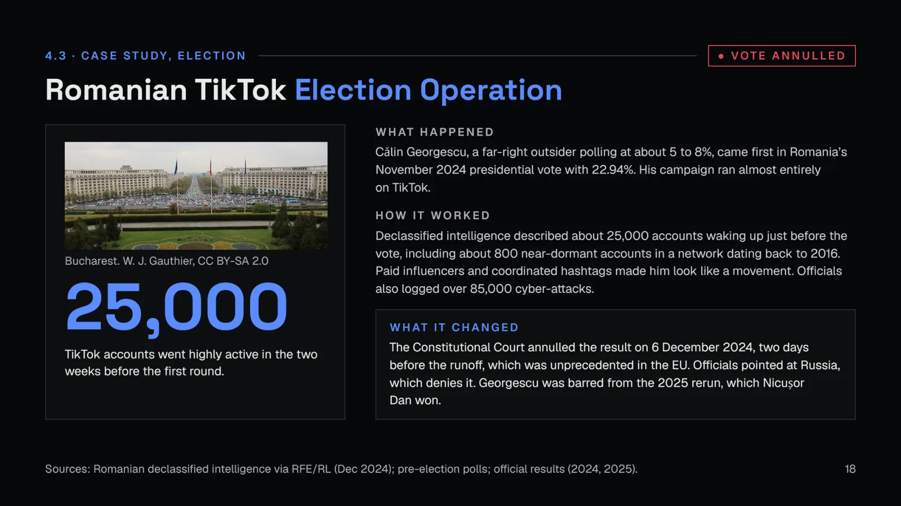
Slide 18 text
4.3 · Case study, election ● Vote annulled Romanian TikTok Election Operation Bucharest. W. J. Gauthier, CC BY-SA 2.0 25,000 TikTok accounts went highly active in the two weeks before the first round. What happened Călin Georgescu, a far-right outsider polling at about 5 to 8%, came first in Romania’s November 2024 presidential vote with 22.94%. His campaign ran almost entirely on TikTok. How it worked Declassified intelligence described about 25,000 accounts waking up just before the vote, including about 800 near-dormant accounts in a network dating back to 2016. Paid influencers and coordinated hashtags made him look like a movement. Officials also logged over 85,000 cyber-attacks. What it changed The Constitutional Court annulled the result on 6 December 2024, two days before the runoff, which was unprecedented in the EU. Officials pointed at Russia, which denies it. Georgescu was barred from the 2025 rerun, which Nicușor Dan won. Sources: Romanian declassified intelligence via RFE/RL (Dec 2024); pre-election polls; official results (2024, 2025). 18
-
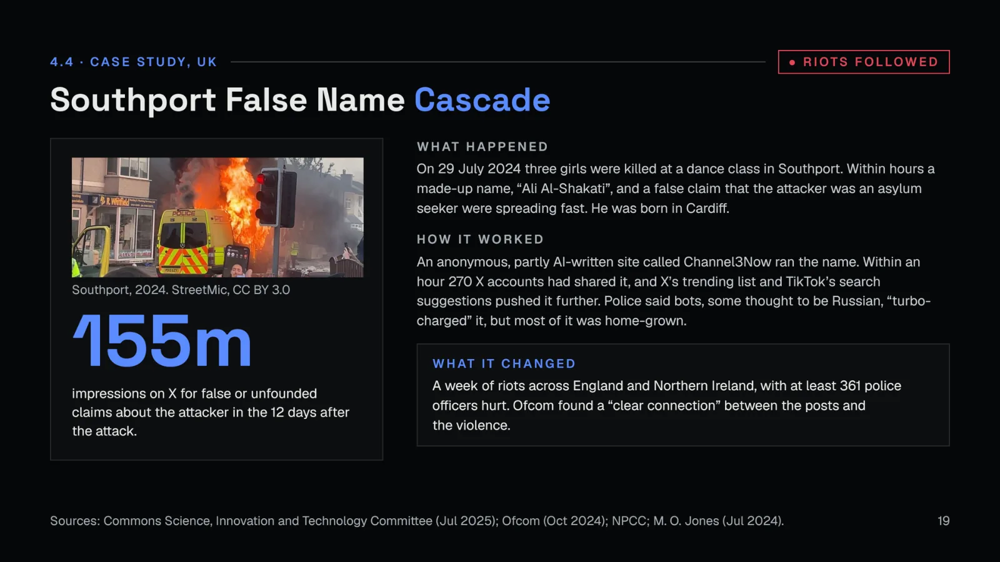
Slide 19 text
4.4 · Case study, UK ● Riots followed Southport False Name Cascade Southport, 2024. StreetMic, CC BY 3.0 155m impressions on X for false or unfounded claims about the attacker in the 12 days after the attack. What happened On 29 July 2024 three girls were killed at a dance class in Southport. Within hours a made-up name, “Ali Al-Shakati”, and a false claim that the attacker was an asylum seeker were spreading fast. He was born in Cardiff. How it worked An anonymous, partly AI-written site called Channel3Now ran the name. Within an hour 270 X accounts had shared it, and X’s trending list and TikTok’s search suggestions pushed it further. Police said bots, some thought to be Russian, “turbo- charged” it, but most of it was home-grown. What it changed A week of riots across England and Northern Ireland, with at least 361 police officers hurt. Ofcom found a “clear connection” between the posts and the violence. Sources: Commons Science, Innovation and Technology Committee (Jul 2025); Ofcom (Oct 2024); NPCC; M. O. Jones (Jul 2024). 19
-
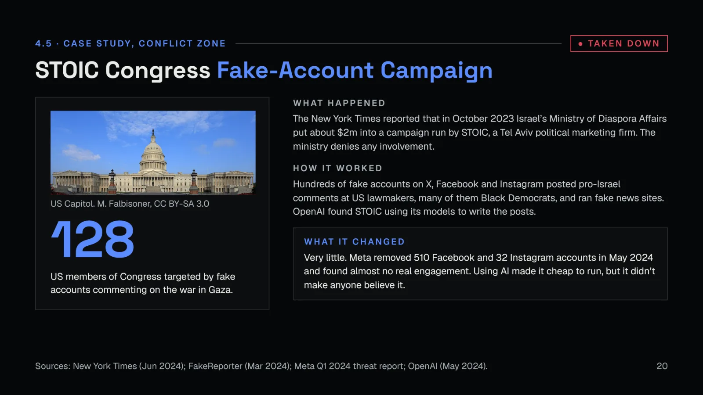
Slide 20 text
4.5 · Case study, conflict zone ● Taken down STOIC Congress Fake-Account Campaign US Capitol. M. Falbisoner, CC BY-SA 3.0 128 US members of Congress targeted by fake accounts commenting on the war in Gaza. What happened The New York Times reported that in October 2023 Israel’s Ministry of Diaspora Affairs put about $2m into a campaign run by STOIC, a Tel Aviv political marketing firm. The ministry denies any involvement. How it worked Hundreds of fake accounts on X, Facebook and Instagram posted pro-Israel comments at US lawmakers, many of them Black Democrats, and ran fake news sites. OpenAI found STOIC using its models to write the posts. What it changed Very little. Meta removed 510 Facebook and 32 Instagram accounts in May 2024 and found almost no real engagement. Using AI made it cheap to run, but it didn’t make anyone believe it. Sources: New York Times (Jun 2024); FakeReporter (Mar 2024); Meta Q1 2024 threat report; OpenAI (May 2024). 20
-
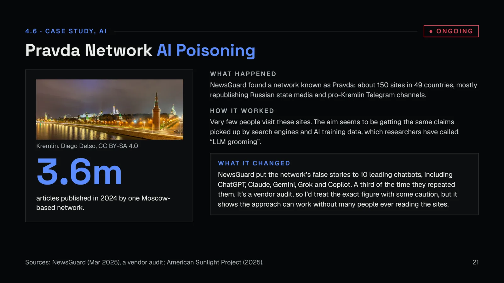
Slide 21 text
4.6 · Case study, AI ● Ongoing Pravda Network AI Poisoning Kremlin. Diego Delso, CC BY-SA 4.0 3.6m articles published in 2024 by one Moscow- based network. What happened NewsGuard found a network known as Pravda: about 150 sites in 49 countries, mostly republishing Russian state media and pro-Kremlin Telegram channels. How it worked Very few people visit these sites. The aim seems to be getting the same claims picked up by search engines and AI training data, which researchers have called “LLM grooming”. What it changed NewsGuard put the network’s false stories to 10 leading chatbots, including ChatGPT, Claude, Gemini, Grok and Copilot. A third of the time they repeated them. It’s a vendor audit, so I’d treat the exact figure with some caution, but it shows the approach can work without many people ever reading the sites. Sources: NewsGuard (Mar 2025), a vendor audit; American Sunlight Project (2025). 21
-
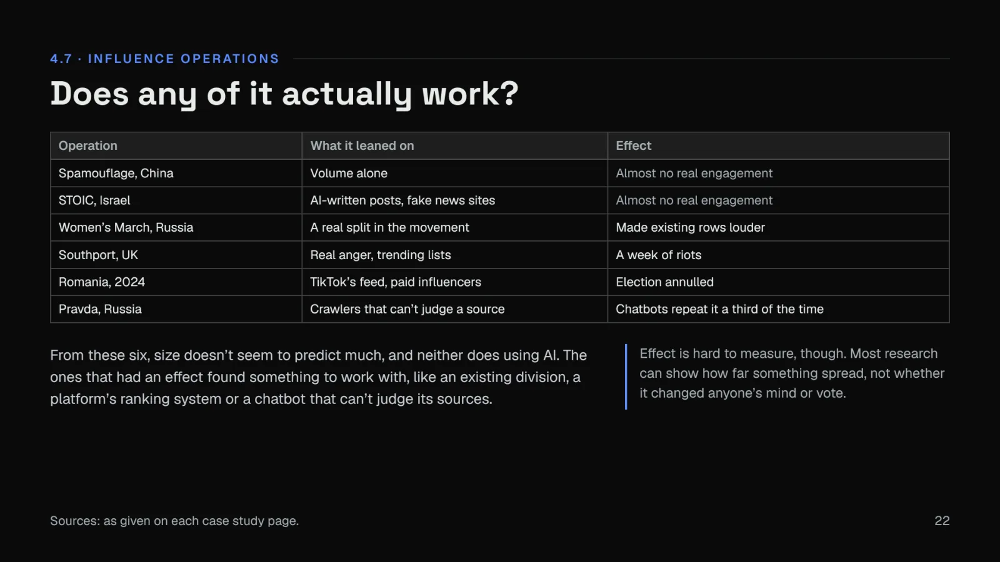
Slide 22 text
4.7 · Influence operations Does any of it actually work? Operation What it leaned on Effect Spamouflage, China Volume alone Almost no real engagement STOIC, Israel AI-written posts, fake news sites Almost no real engagement Women’s March, Russia A real split in the movement Made existing rows louder Southport, UK Real anger, trending lists A week of riots Romania, 2024 TikTok’s feed, paid influencers Election annulled Pravda, Russia Crawlers that can’t judge a source Chatbots repeat it a third of the time From these six, size doesn’t seem to predict much, and neither does using AI. The ones that had an effect found something to work with, like an existing division, a platform’s ranking system or a chatbot that can’t judge its sources. Effect is hard to measure, though. Most research can show how far something spread, not whether it changed anyone’s mind or vote. Sources: as given on each case study page. 22
-
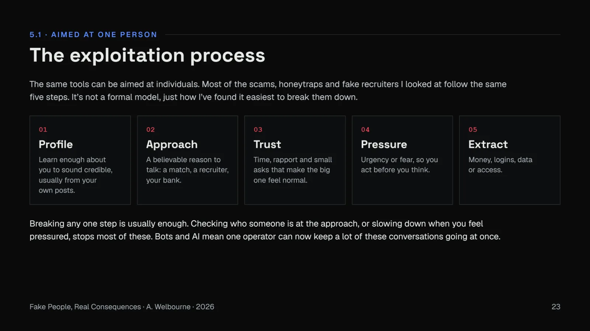
Slide 23 text
5.1 · Aimed at one person The exploitation process The same tools can be aimed at individuals. Most of the scams, honeytraps and fake recruiters I looked at follow the same five steps. It’s not a formal model, just how I’ve found it easiest to break them down. 01 Profile Learn enough about you to sound credible, usually from your own posts. 02 Approach A believable reason to talk: a match, a recruiter, your bank. 03 Trust Time, rapport and small asks that make the big one feel normal. 04 Pressure Urgency or fear, so you act before you think. 05 Extract Money, logins, data or access. Breaking any one step is usually enough. Checking who someone is at the approach, or slowing down when you feel pressured, stops most of these. Bots and AI mean one operator can now keep a lot of these conversations going at once.
-
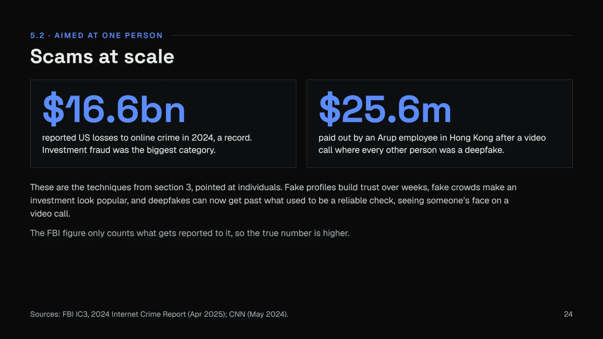
Slide 24 text
5.2 · Aimed at one person Scams at scale $16.6bn reported US losses to online crime in 2024, a record. Investment fraud was the biggest category. $25.6m paid out by an Arup employee in Hong Kong after a video call where every other person was a deepfake. These are the techniques from section 3, pointed at individuals. Fake profiles build trust over weeks, fake crowds make an investment look popular, and deepfakes can now get past what used to be a reliable check, seeing someone’s face on a video call. The FBI figure only counts what gets reported to it, so the true number is higher. Sources: FBI IC3, 2024 Internet Crime Report (Apr 2025); CNN (May 2024). 24
-
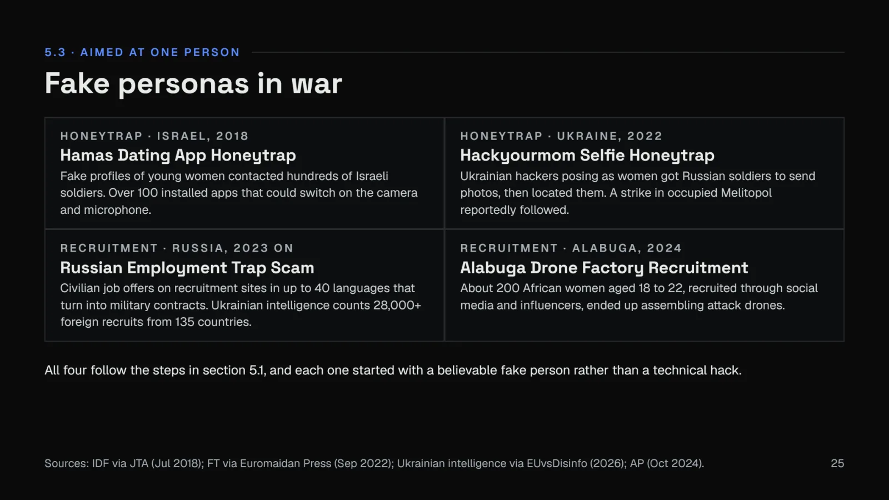
Slide 25 text
5.3 · Aimed at one person Fake personas in war Honeytrap · Israel, 2018 Hamas Dating App Honeytrap Fake profiles of young women contacted hundreds of Israeli soldiers. Over 100 installed apps that could switch on the camera and microphone. Honeytrap · Ukraine, 2022 Hackyourmom Selfie Honeytrap Ukrainian hackers posing as women got Russian soldiers to send photos, then located them. A strike in occupied Melitopol reportedly followed. Recruitment · Russia, 2023 on Russian Employment Trap Scam Civilian job offers on recruitment sites in up to 40 languages that turn into military contracts. Ukrainian intelligence counts 28,000+ foreign recruits from 135 countries. Recruitment · Alabuga, 2024 Alabuga Drone Factory Recruitment About 200 African women aged 18 to 22, recruited through social media and influencers, ended up assembling attack drones. All four follow the steps in section 5.1, and each one started with a believable fake person rather than a technical hack. Sources: IDF via JTA (Jul 2018); FT via Euromaidan Press (Sep 2022); Ukrainian intelligence via EUvsDisinfo (2026); AP (Oct 2024). 25
-
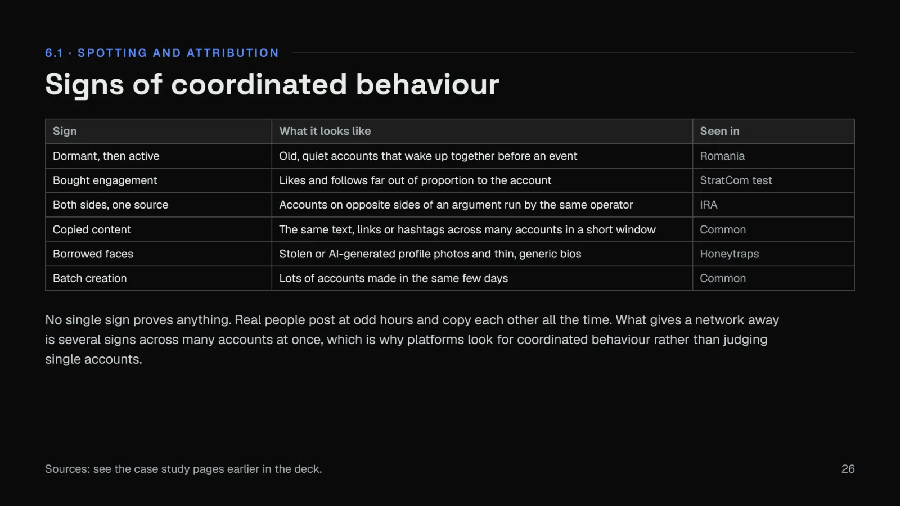
Slide 26 text
6.1 · Spotting and attribution Signs of coordinated behaviour Sign What it looks like Seen in Dormant, then active Old, quiet accounts that wake up together before an event Romania Bought engagement Likes and follows far out of proportion to the account StratCom test Both sides, one source Accounts on opposite sides of an argument run by the same operator IRA Copied content The same text, links or hashtags across many accounts in a short window Common Borrowed faces Stolen or AI-generated profile photos and thin, generic bios Honeytraps Batch creation Lots of accounts made in the same few days Common No single sign proves anything. Real people post at odd hours and copy each other all the time. What gives a network away is several signs across many accounts at once, which is why platforms look for coordinated behaviour rather than judging single accounts. Sources: see the case study pages earlier in the deck. 26
-
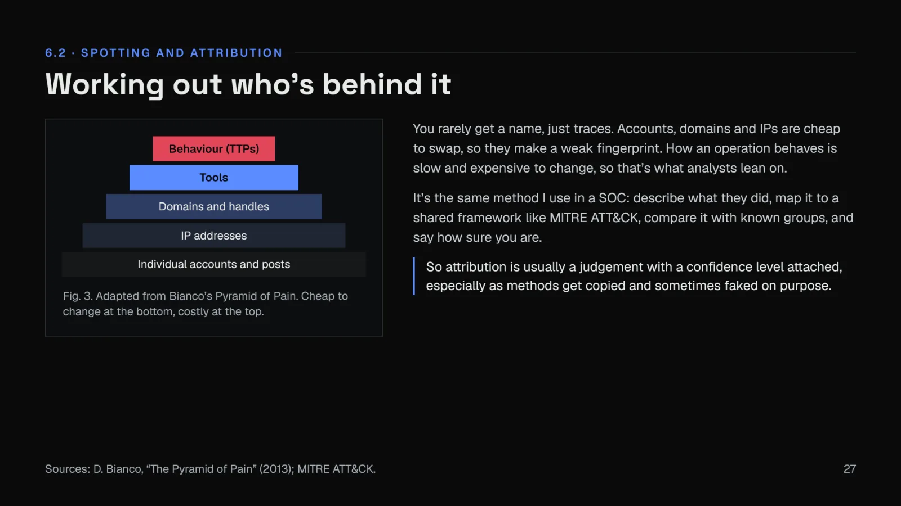
Slide 27 text
6.2 · Spotting and attribution Working out who’s behind it Behaviour (TTPs) Tools Domains and handles IP addresses Individual accounts and posts Fig. 3. Adapted from Bianco’s Pyramid of Pain. Cheap to change at the bottom, costly at the top. You rarely get a name, just traces. Accounts, domains and IPs are cheap to swap, so they make a weak fingerprint. How an operation behaves is slow and expensive to change, so that’s what analysts lean on. It’s the same method I use in a SOC: describe what they did, map it to a shared framework like MITRE ATT&CK, compare it with known groups, and say how sure you are. So attribution is usually a judgement with a confidence level attached, especially as methods get copied and sometimes faked on purpose. Sources: D. Bianco, “The Pyramid of Pain” (2013); MITRE ATT&CK. 27
-
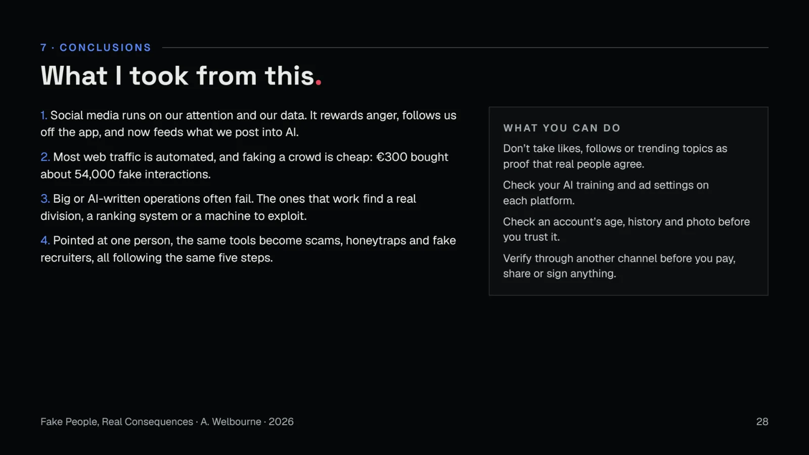
Slide 28 text
7 · Conclusions What I took from this. 1. Social media runs on our attention and our data. It rewards anger, follows us off the app, and now feeds what we post into AI. 2. Most web traffic is automated, and faking a crowd is cheap: €300 bought about 54,000 fake interactions. 3. Big or AI-written operations often fail. The ones that work find a real division, a ranking system or a machine to exploit. 4. Pointed at one person, the same tools become scams, honeytraps and fake recruiters, all following the same five steps. What you can do Don’t take likes, follows or trending topics as proof that real people agree. Check your AI training and ad settings on each platform. Check an account’s age, history and photo before you trust it. Verify through another channel before you pay, share or sign anything.
-
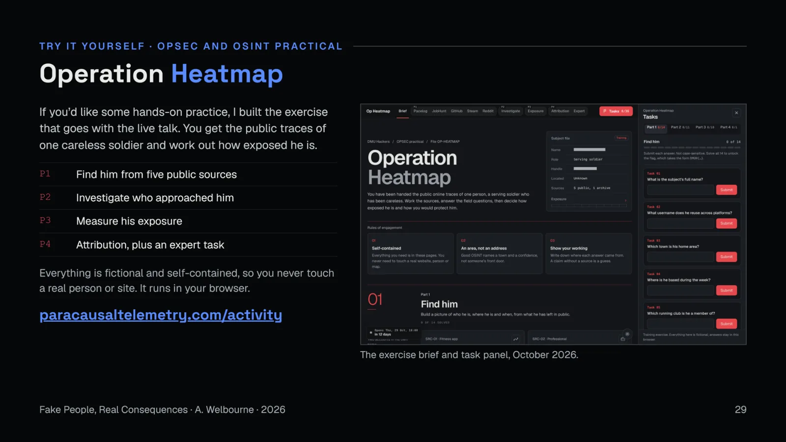
Slide 29 text
Try it yourself · OPSEC and OSINT practical Operation Heatmap If you’d like some hands-on practice, I built the exercise that goes with the live talk. You get the public traces of one careless soldier and work out how exposed he is. P1 Find him from five public sources P2 Investigate who approached him P3 Measure his exposure P4 Attribution, plus an expert task Everything is fictional and self-contained, so you never touch a real person or site. It runs in your browser. paracausaltelemetry.com/activity The exercise brief and task panel, October 2026.
-
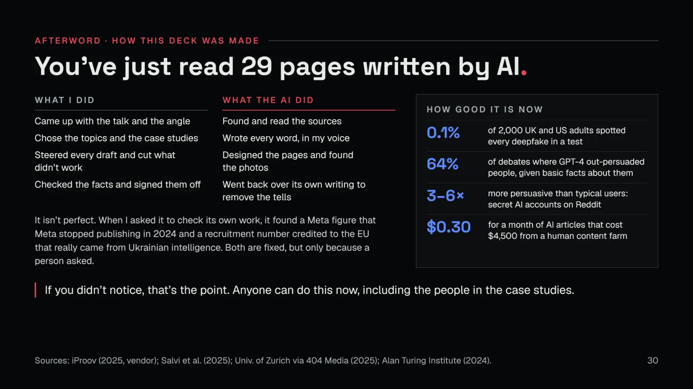
Slide 30 text
Afterword · How this deck was made You’ve just read 29 pages written by AI. What I did Came up with the talk and the angle Chose the topics and the case studies Steered every draft and cut what didn’t work Checked the facts and signed them off What the AI did Found and read the sources Wrote every word, in my voice Designed the pages and found the photos Went back over its own writing to remove the tells It isn’t perfect. When I asked it to check its own work, it found a Meta figure that Meta stopped publishing in 2024 and a recruitment number credited to the EU that really came from Ukrainian intelligence. Both are fixed, but only because a person asked. How good it is now 0.1% of 2,000 UK and US adults spotted every deepfake in a test 64% of debates where GPT-4 out-persuaded people, given basic facts about them 3–6× more persuasive than typical users: secret AI accounts on Reddit $0.30 for a month of AI articles that cost $4,500 from a human content farm If you didn’t notice, that’s the point. Anyone can do this now, including the people in the case studies. Sources: iProov (2025, vendor); Salvi et al. (2025); Univ. of Zurich via 404 Media (2025); Alan Turing Institute (2024). 30
-
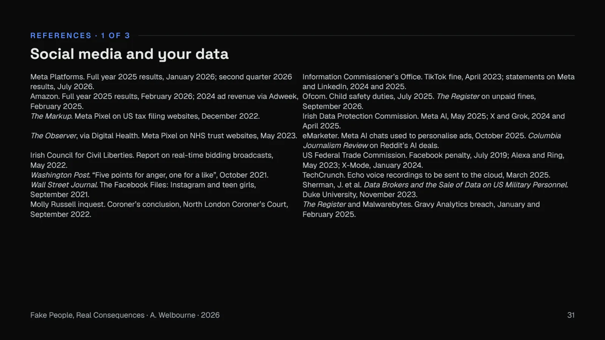
Slide 31 text
References · 1 of 3 Social media and your data Meta Platforms. Full year 2025 results, January 2026; second quarter 2026 results, July 2026. Information Commissioner’s Office. TikTok fine, April 2023; statements on Meta and LinkedIn, 2024 and 2025. Amazon. Full year 2025 results, February 2026; 2024 ad revenue via Adweek, February 2025. Ofcom. Child safety duties, July 2025. The Register on unpaid fines, September 2026. The Markup. Meta Pixel on US tax filing websites, December 2022. Irish Data Protection Commission. Meta AI, May 2025; X and Grok, 2024 and April 2025. The Observer, via Digital Health. Meta Pixel on NHS trust websites, May 2023. eMarketer. Meta AI chats used to personalise ads, October 2025. Columbia Journalism Review on Reddit’s AI deals. Irish Council for Civil Liberties. Report on real-time bidding broadcasts, May 2022. US Federal Trade Commission. Facebook penalty, July 2019; Alexa and Ring, May 2023; X-Mode, January 2024. Washington Post. “Five points for anger, one for a like”, October 2021. TechCrunch. Echo voice recordings to be sent to the cloud, March 2025. Wall Street Journal. The Facebook Files: Instagram and teen girls, September 2021. Sherman, J. et al. Data Brokers and the Sale of Data on US Military Personnel. Duke University, November 2023. Molly Russell inquest. Coroner’s conclusion, North London Coroner’s Court, September 2022. The Register and Malwarebytes. Gravy Analytics breach, January and February 2025.
-
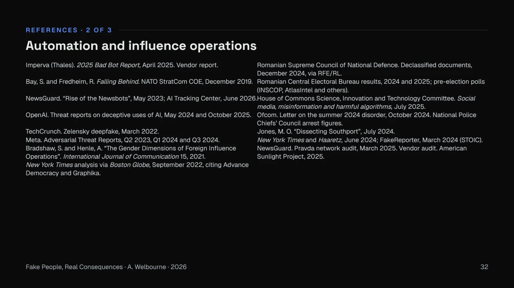
Slide 32 text
References · 2 of 3 Automation and influence operations Imperva (Thales). 2025 Bad Bot Report, April 2025. Vendor report. Romanian Supreme Council of National Defence. Declassified documents, December 2024, via RFE/RL. Bay, S. and Fredheim, R. Falling Behind. NATO StratCom COE, December 2019. Romanian Central Electoral Bureau results, 2024 and 2025; pre-election polls (INSCOP, AtlasIntel and others). NewsGuard. “Rise of the Newsbots”, May 2023; AI Tracking Center, June 2026.House of Commons Science, Innovation and Technology Committee. Social media, misinformation and harmful algorithms, July 2025. OpenAI. Threat reports on deceptive uses of AI, May 2024 and October 2025. Ofcom. Letter on the summer 2024 disorder, October 2024. National Police Chiefs’ Council arrest figures. TechCrunch. Zelensky deepfake, March 2022. Jones, M. O. “Dissecting Southport”, July 2024. Meta. Adversarial Threat Reports, Q2 2023, Q1 2024 and Q3 2024. New York Times and Haaretz, June 2024; FakeReporter, March 2024 (STOIC). Bradshaw, S. and Henle, A. “The Gender Dimensions of Foreign Influence Operations”. International Journal of Communication 15, 2021. NewsGuard. Pravda network audit, March 2025. Vendor audit. American Sunlight Project, 2025. New York Times analysis via Boston Globe, September 2022, citing Advance Democracy and Graphika.
-
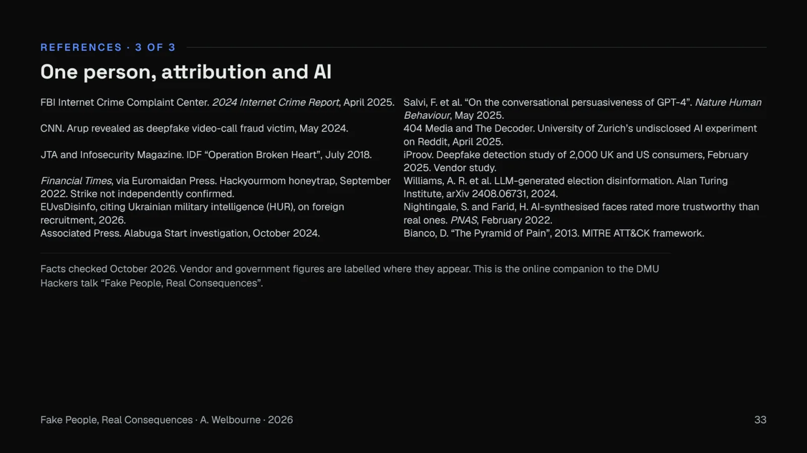
Slide 33 text
References · 3 of 3 One person, attribution and AI FBI Internet Crime Complaint Center. 2024 Internet Crime Report, April 2025. Salvi, F. et al. “On the conversational persuasiveness of GPT-4”. Nature Human Behaviour, May 2025. CNN. Arup revealed as deepfake video-call fraud victim, May 2024. 404 Media and The Decoder. University of Zurich’s undisclosed AI experiment on Reddit, April 2025. JTA and Infosecurity Magazine. IDF “Operation Broken Heart”, July 2018. iProov. Deepfake detection study of 2,000 UK and US consumers, February 2025. Vendor study. Financial Times, via Euromaidan Press. Hackyourmom honeytrap, September 2022. Strike not independently confirmed. Williams, A. R. et al. LLM-generated election disinformation. Alan Turing Institute, arXiv 2408.06731, 2024. EUvsDisinfo, citing Ukrainian military intelligence (HUR), on foreign recruitment, 2026. Nightingale, S. and Farid, H. AI-synthesised faces rated more trustworthy than real ones. PNAS, February 2022. Associated Press. Alabuga Start investigation, October 2024. Bianco, D. “The Pyramid of Pain”, 2013. MITRE ATT&CK framework. Facts checked October 2026. Vendor and government figures are labelled where they appear. This is the online companion to the DMU Hackers talk “Fake People, Real Consequences”.
About this talk
This deck is about fake people online and the system that makes them worth building. I wanted to answer four questions. How do social media companies make money from us? How much of what we see online is automated? What does it cost to fake a crowd? And what happens when that fakery is aimed at an argument, an election or one person?
I’ve pulled together published research, company results, regulator findings and investigative journalism. Where a figure comes from a vendor or a government with a stake in it, I say so. Sources are listed at the foot of each page and in full at the end.
Try Operation Heatmap: The OPSEC and OSINT practical that goes with the live talk.